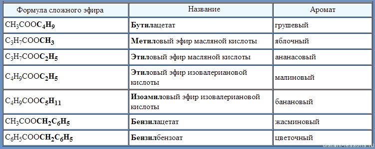

Сложные эфиры являются важнейшими производными карбоновых кислот, которые можно получить при взаимодействии этих кислот со спиртами. Общая формула сложных эфиров:

В общем виде реакцию их получения можно представить так:
Физические свойстваСложные эфиры низших карбоновых кислот (с числом атомов углерода до 8) - летучие жидкости или твёрдые вещества, плохо растворяющиеся в воде, с приятным запахом, легче воды. Сложные эфиры высших спиртов и карбоновых кислот - твёрдые, воскоподобные вещества.
Распространение в природеСложные эфиры жироко распространены в природе. Ароматы цветов, ягод, плодов и других частей растений обусловлен присутствием в них сложных эфиров. Последние являются ведущими составными частями эфирных масел (летучих веществ, которые можно выделить из определённого вида растений).
Сложные эфиры широко используются в качестве растворителей, пластификаторов, ароматизаторов.
Сложные эфиры на основе низших спиртов и кислот используют в пищевой промышленности при создании искусственных эссенций, используемых в производстве фруктовых вод, кондитерских изделий, а сложные эфиры на основе ароматических спиртов – для косметических средств, отдушек для препаратов бытовой химии.
Сложные эфиры непредельных спиртов используются для изготовления лаков и красок, так как вступают в реакции присоединения по двойной связи и образуют полимеры. Например, винилацетат - сложный эфир уксусной кислоты и винилового спирта при полимеризации образует поливинилацетат, который используется для изготовления кожезаменителя, его еще называют винилкожей или дермантином.